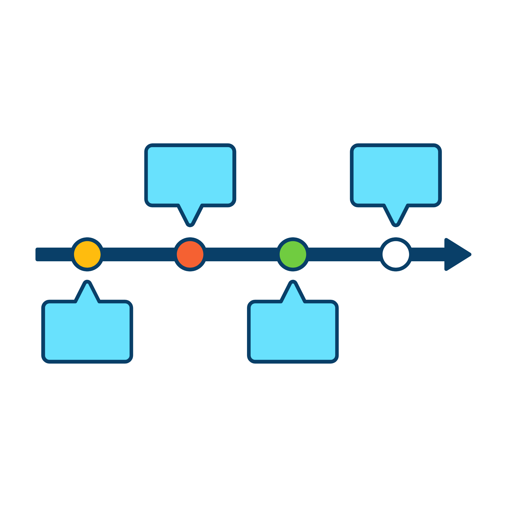

SEJARAH INTERNET DAN INTRANET

𖤐SEJARAH INTERNET
Internet dimulai pada 1960-an dengan pengembangan ARPANET, sebuah proyek milik Departemen Pertahanan AS yang
menghubungkan komputer-komputer di beberapa universitas. Pada tahun 1970-an, protokol TCP/IP dikembangkan oleh Vinton
Cerf dan Robert Kahn, memungkinkan jaringan yang lebih besar untuk saling terhubung.
- 1980-an: teknologi ini mulai berkembang, dan World Wide Web (WWW) ditemukan oleh Tim Berners-Lee pada 1989,
yang memudahkan akses informasi dengan menggunakan browser dan hyperlink.
- 1990-an: internet berkembang pesat dengan munculnya browser web dan penyedia layanan internet (ISP),
serta dimulainya e-commerce.
- 2000-an: penggunaan internet semakin meluas, dan media sosial serta video streaming mulai populer.
- 2010-an: smartphone dan aplikasi mobile mengubah cara orang mengakses internet, sementara cloud computing
menjadi lebih umum.
- 2020-an: perkembangan Internet of Things (IoT) dan teknologi seperti AI serta 5G semakin mengubah cara
internet digunakan di berbagai bidang kehidupan.
𖤐SEJARAH INTRANET
Sejarah intranet dimulai pada 1980-an, ketika organisasi mulai membangun jaringan komputer internal yang terpisah dari
internet global. Kemudian, di era 1990-an, dengan perkembangan teknologi web, perusahaan mulai menggunakan intranet untuk berbagi
informasi dan kolaborasi di dalam organisasi, menggunakan browser web dan hyperlink.
- 2000-an: intranet berkembang untuk mendukung aplikasi internal seperti manajemen dokumen dan komunikasi
antar tim. Konsep Intranet 2.0 muncul pada 2010-an, dengan integrasi alat kolaborasi dan aplikasi berbasis cloud
untuk meningkatkan efisiensi dan aksesibilitas.
- 2020-an: dengan tren kerja jarak jauh, intranet menjadi lebih penting sebagai platform kolaborasi dan
komunikasi bagi karyawan di berbagai lokasi, terintegrasi dengan alat produktivitas modern. Teknologi cloud dan
aplikasi berbasis web membuat intranet semakin fleksibel dan mudah diakses.